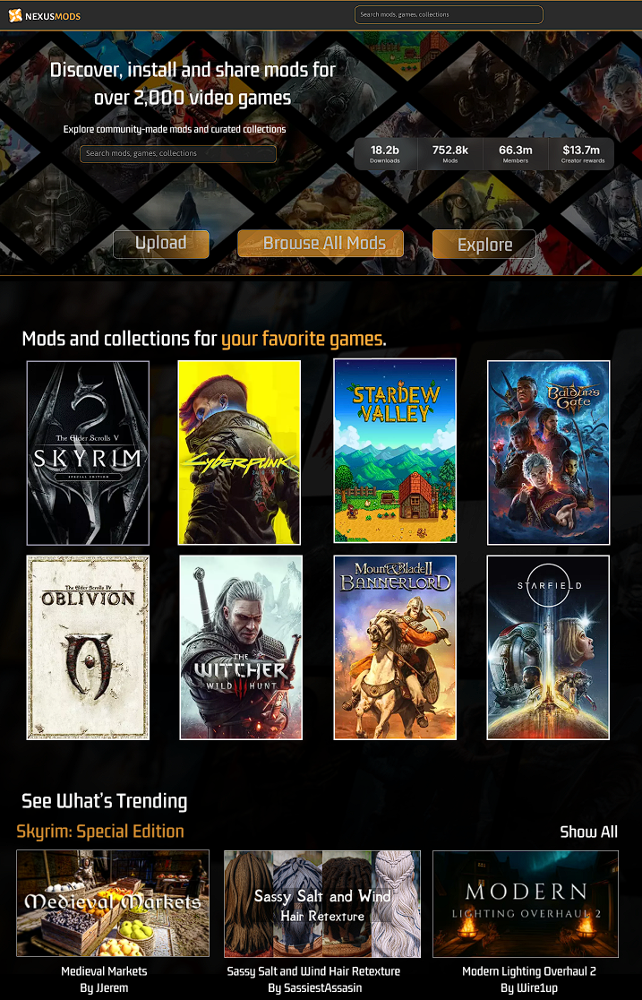
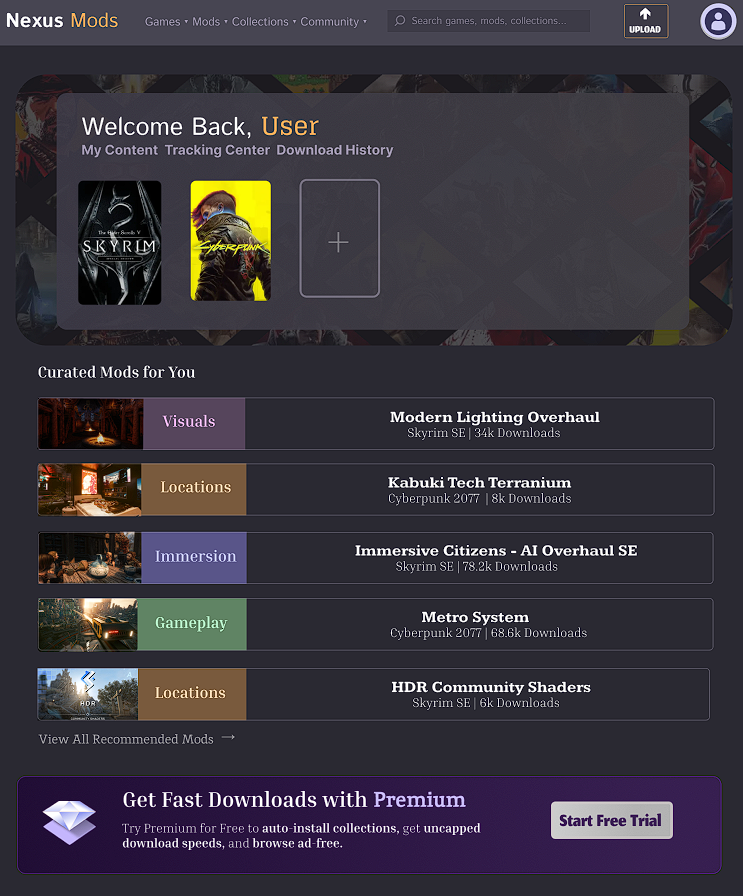
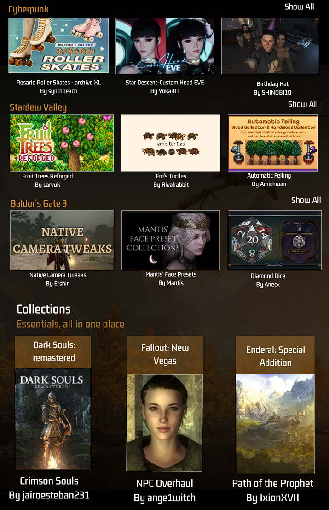
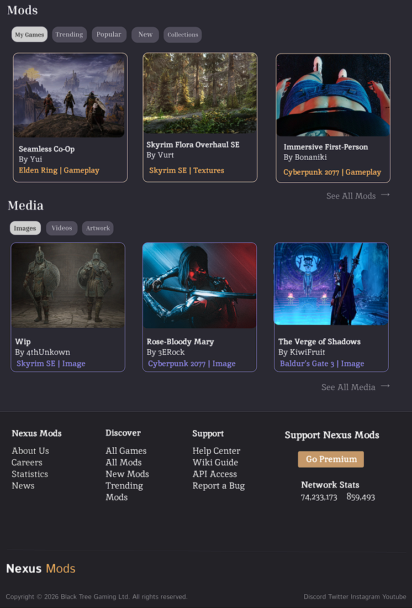
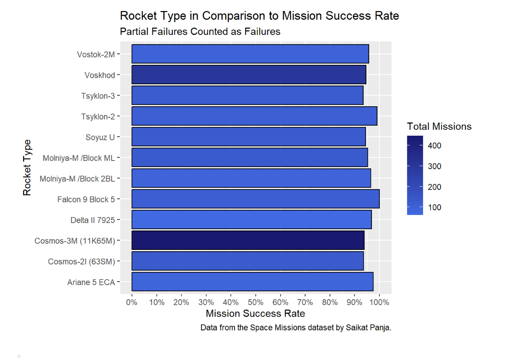
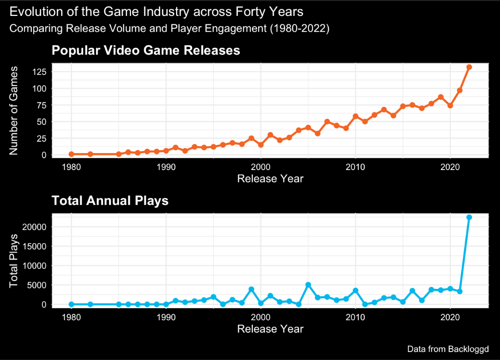

Projects 🗁
Low-fidelity Exploration: HUD Design
An interactive design project focused on reduction of cognitive load and player immersion through design decisions.
[01] Original Layout

[02] Optimized Iteration

▶ Read Research & Design Process
The Goal
- I began to consider the primary elements that are needed for a fantasy RPG: Health bar, inventory, quest markers, ability icons, and minimaps. I carefully incorporated these into a low-fidelity HUD design to deliver information without reducing player immersion.
The Approach
- I began researching UI elements within video games.
- I analyzed common patterns across highly regarded video-game HUDs.
- I aimed to balance readable and organized content (in terms of size, layout, color).
Design
- Minimap positioned in the corner, providing spatial context and easy navigation.
- Small Portrait clarifies character choice.
- Left modal bar displays equipped items and emphasizes the selected weapon.
- Expandable quickbar for magic selection supports flexibility and maximizes space.
- Center lock-on mechanic holds focus.
- Health and mana bars visible only when relevant, reducing clutter and increasing focus.
Takeaways
- UI components must be calibrated for a fast-paced setting.
- Content sensitive information should be prioritized when there is minimal space allowed.
- Thematic styling should be consistent and match the given genre.
Redesign of the Nexus Mods' Front Page
A UX/UI redesign of the Nexus Mods front page to reduce visual clutter and prioritize content organization based on user reports.
High-Fidelity Mockup (Top)

Visual Architecture (Top)

High-Fidelity Mockup (Bottom)

Visual Architecture (Bottom)

▶ Read Research & Design Process
Qualitative Research
To gather information, I analyzed user discussions across public forums, including Reddit, Quora, and Nexus.
- Interface has poor navigation and visual clutter.
- Overexposure to specific features, such as collections.
- High density of information and unused space.
- Distracting elements (miniplayer with advertisements).
Key Insights
- Users struggle to find core content.
- Visual noise reduces attention and engagement.
- Overall, the layout does not reflect the priorities of a returning Nexus user.
Psychological Design
- Popular games and curated content were grouped at the top, since many returning users visit the site searching for a specific title or personalized mods.
- The trending section was originally kept for easy navigation, letting users explore popular content via the “Show All” button. This was later moved to a button for succinctness.
- Collections were kept compact, using a scroll feature to maximize space and efficiency to minimize cognitive load.
- The orange and grey color scheme was lightly reduced to improve readability, particularly for buttons.
- Relocated advertisements to a small strip alone and removed corner miniplayer to preserve focus on the main content and decrease inattentional blindness.
Takeaways
- Proper usability research and testing is necessary to clarify interface weak points and make improvements.
- Designs choices should seamlessly reflect the priorities of the main userbase.
- Frustration can be minimized through strategic placement of core content, search bars, sliders, and advertisements and proper use of space.
- Secondary elements, such as advertisements or promoted features, should not visibly overpower the main purpose of the website.
Dynamic Analysis of Global Space Missions
Team-based data analysis of space missions ranging from 1957-2022, determining patterns in mission success, rocket durability, and launch outcomes.
View R Code
## filtering rocket data
success_by_rocket <-
space_data |>
select(Rocket, MissionStatus
) |>
mutate(
success = MissionStatus == "Success"
) |>
group_by(Rocket) |>
summarize(
success_rate = mean(success),
missions = n()
) |>
filter(missions >= 50) |>
arrange(desc(success_rate)) |>
## producing bar graph
ggplot(
aes(
x = Rocket,
y = success_rate,
fill = missions)
) +
geom_col(color = "black") +
scale_y_continuous(
limits = c(0, 1),
breaks = seq(0, 1, by = 0.1),
labels = scales::percent
) +
coord_flip() +
scale_fill_gradient(
low = "royalblue",
high = "midnightblue"
) +
labs(
x = "Rocket Type",
y = "Mission Success Rate",
fill = "Total Missions",
title = "Rocket Type in Comparison to Mission Success Rate",
subtitle = "Partial Failures Counted as Failures",
caption = "Data from the Space Missions dataset by Saikat Panja."
)
success_by_rocket

Role
- Created a visualization comparing rocket type and mission success rate.
- Showed reliability trends of rocket types over time.
- Standardized code.
- Interpreted and communicated results in text.
Player Engagement Analysis
An examination of Backloggd video game data across forty years, measuring player dynamics, consistent media trends, dominating genres, and overall engagement.
View R Code
# parsing dates
games_parsed <-
games |>
mutate(
release_date = mdy(`Release Date`),
year = year(release_date)
)
# filtering NA, and obtaining count of years before 2022
release_year <-
games_parsed |>
filter(!is.na(year)) |>
count(year) |>
filter(year <= 2022)
# count of games over time
game_count <-
ggplot(
release_year,
aes(
x = year,
y = n
)
) +
geom_line(color = "#F26522", size = 1) +
geom_point(color = "#F26522", size = 2) +
scale_y_continuous(breaks = seq(0, 125, by = 25)) +
labs(
title = "Popular Video Game Releases",
y = "Number of Games",
x = "Release Year"
) +
theme_minimal() +
theme(
plot.title = element_text(face = "bold", color = "white"),
text = element_text(color = "white"),
axis.text = element_text(color = "white"),
plot.background = element_rect(fill = "black", color = "black"),
panel.background = element_rect(fill = "white"))
# filtering years
# standardizing total
total_plays_data <-
games_parsed |>
filter(!is.na(year) & year <= 2022) |>
group_by(year) |>
summarize(
total_annual_plays = sum(as.numeric(Plays), na.rm = TRUE)
)
# total plays plot
total_plays <-
total_plays_data |>
ggplot(
aes(
x = year,
y = total_annual_plays
)
) +
geom_line(
color = "#00B7EB", size = 1) +
geom_point(color = "#00B7EB", size = 2) +
labs(
title = "Total Annual Plays",
x = "Release Year",
y = "Total Plays"
) +
theme_minimal() + theme(
plot.title = element_text(face = "bold", color = "white"),
text = element_text(color = "white"),
axis.text = element_text(color = "white"),
plot.background = element_rect(fill = "black", color = "black"),
panel.background = element_rect(fill = "white"))
compared_plots <-
game_count / total_plays
compared_plots +
plot_annotation(
title = "Evolution of the Game Industry across Forty Years",
subtitle = "Comparing Release Volume and Player Engagement (1980-2022)",
caption = "Data from Backloggd") &
theme(
plot.background = element_rect(fill = "black", color = "black"),
text = element_text(color = "white")
)

Role
- Produced two line graphs to examine video game trends over time and compared with patchwork.
- Aided written communication of results.
- Implemented a consistent, engaging color scheme.
Technical Skills
- Data Analysis & Programming: R, Python
- Web: Basic HTML5/JavaScript/CSS
- Design: Figma, ClipStudio
Email: karaarippe@gmail.com